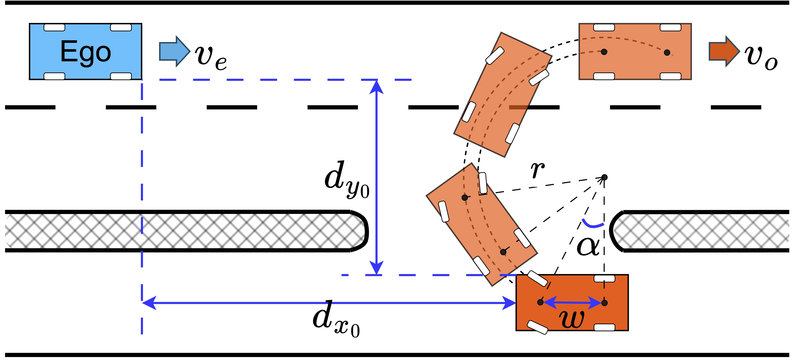

Safety Reference Benchmarks for Evaluating ADSs
In scenario-based testing and validation of autonomous driving systems (ADSs), existing studies often focus on generating scenarios that expose system weaknesses, such as collisions. However, when a collision is observed, it is often unclear whether the collision was avoidable for the ADS or inherently unavoidable because there is not enough time or space to react. Without distinguishing between these two situations, it is difficult to fairly evaluate the safety of different ADSs or understand where they need improvement.
Our Approach
In this work, we introduce safety reference benchmarks that distinguish between collision-avoidable and collision-unavoidable scenarios. Instead of asking only “Did a collision happen?”, we ask the more meaningful question: “Should an autonomous vehicle have been able to avoid this collision?”
The proposed benchmarks focus on two challenging oncoming-traffic situations that have received relatively little attention in previous research:
- An oncoming vehicle making a U-turn.
- An oncoming vehicle swerving into the opposite lane to avoid an obstacle.
For each scenario, we construct a mathematical reference model based on an industrial safety standard developed by the Japan Automobile Manufacturers Association (JAMA). This model represents how a careful human driver would react and defines the boundary between situations where a collision should be avoidable and those where it is unavoidable.

These benchmarks provide an objective baseline for evaluating ADSs, identifying safety-critical scenarios, and comparing different systems under the same conditions.
Experimental Evaluation
To demonstrate the usefulness of the benchmarks, we evaluated several ADSs, including Autoware, a production-grade open-source autonomous driving platform, its shielded version equipped with a runtime safety mechanism, and six state-of-the-art end-to-end AI driving agents.
Our experiments show that even advanced ADSs can fail in scenarios where collisions should have been avoidable according to the benchmarks. In particular, we found that current systems often struggle to correctly predict the intentions of oncoming vehicles during U-turn and swerving maneuvers, causing delayed reactions that may lead to collisions.
The study also shows that integrating a simple runtime safety shield can substantially reduce collisions, demonstrating how the benchmarks can be used not only to evaluate safety but also to measure the effectiveness of safety improvements.
Impact
This work provides a practical and objective framework for evaluating ADSs beyond simply counting collisions. By distinguishing avoidable from unavoidable crashes, the proposed benchmarks make it possible to identify genuine safety weaknesses, compare different ADSs fairly, and guide the development of safer self-driving technologies.
For more details, please check our paper (Tran et al., 2026). The safety benchmarks, experiment trace data, and other supporting materials are available at https://github.com/fomaad/ADS-Safety-Reference-Benchmark.
References
2026
- ISSRESafety Reference Benchmarks with Avoidability Criteria for Evaluating Autonomous Driving SystemsIn The 37th IEEE International Symposium on Software Reliability Engineering, ISSRE 2026 (to appear), 2026